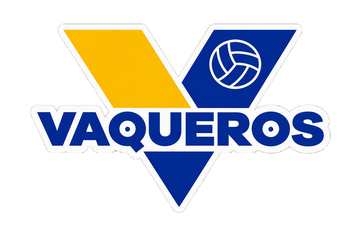
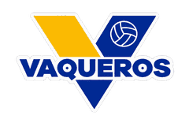
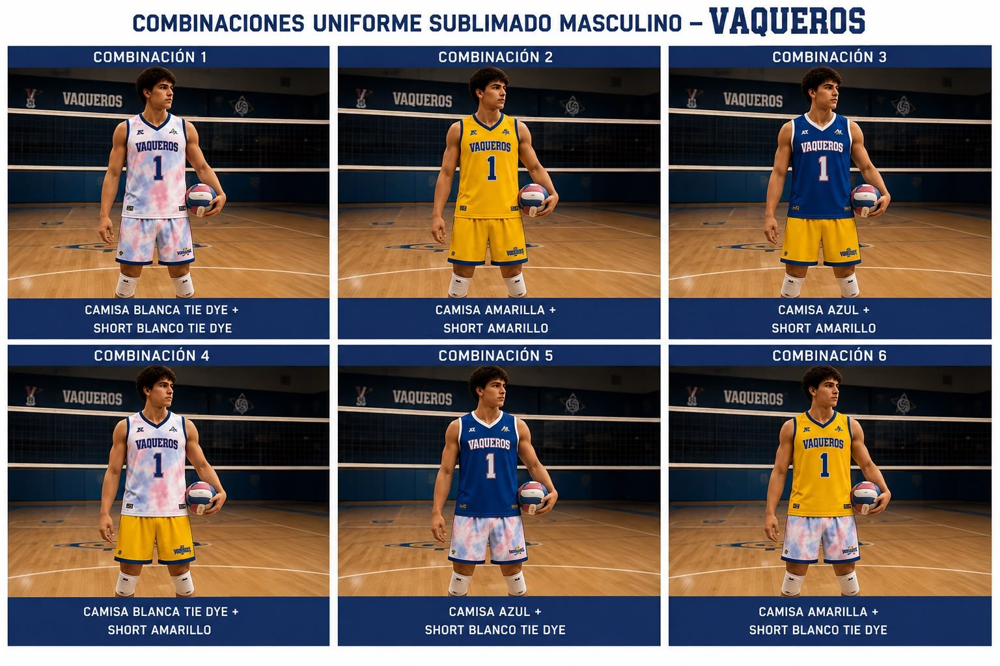
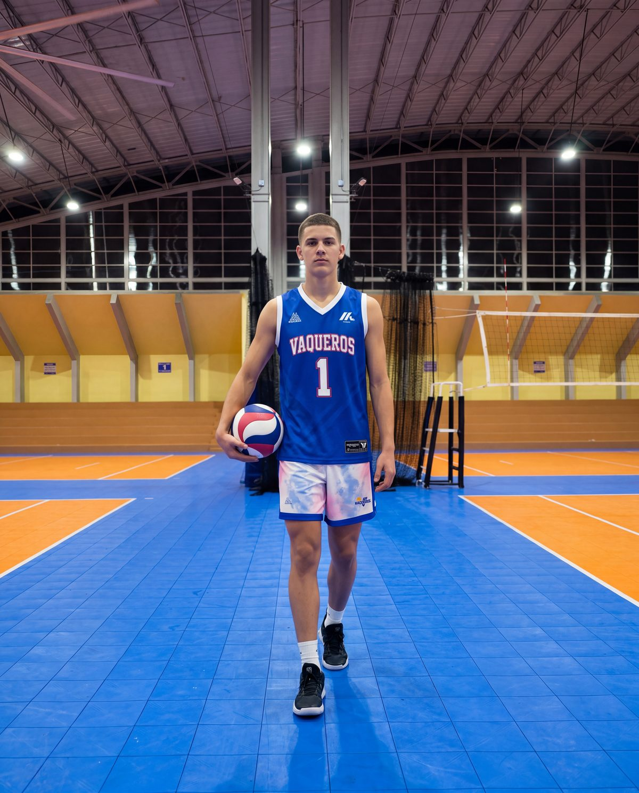
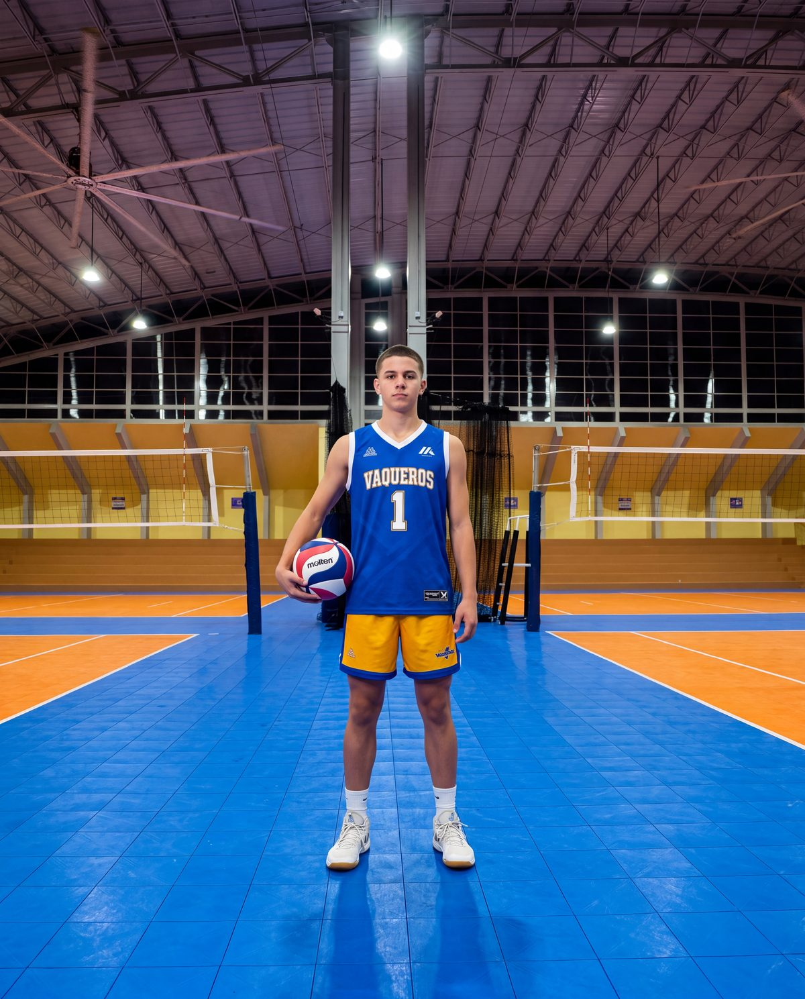
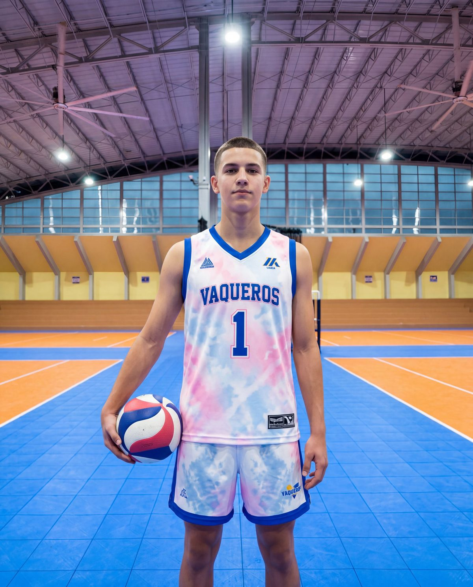
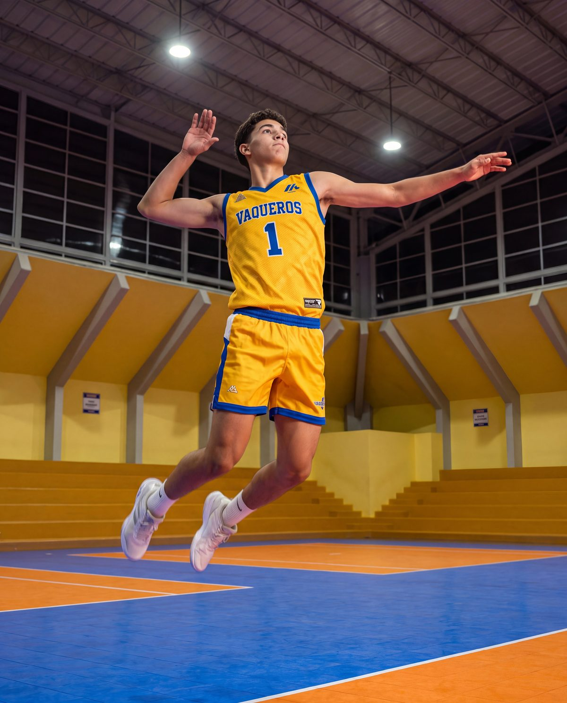

Este no es un plan de práctica improvisado semana a semana — es una progresión con inicio, fases y punto de llegada, diseñada para que cada jugador de {{ team }} termine la temporada en un lugar medible más alto que donde empezó: técnica, física y psicológicamente.
Integramos la base oficial del club (MOVE) con principios de cuatro escuelas que hoy dominan el voleibol juvenil mundial — Estados Unidos, Italia, Polonia y Japón — en un cuerpo técnico que piensa el desarrollo del jugador en 360°: sistemas de juego, preparación física, psicología deportiva y experiencia del jugador.
A los {{ team }} el jugador entra en “Training to Compete” — el motor físico y técnico ya construido se pone al servicio de competir consistentemente, sin sacrificar el desarrollo integral por el resultado inmediato.
Entrenar basado en el juego real, minimizando el trabajo aislado (máximo ~10 min por sesión). Comunicación entrenador-atleta en 360°.
Maximizar los contactos reales de balón por jugador en cada práctica — el aprendizaje técnico se acelera con repetición de alta calidad, no con teoría.
Cero tolerancia a errores no forzados, disciplina técnica absoluta — cada jugador enseña, corrige y sostiene al de al lado.
Creer y respetar las diferentes personalidades del grupo.
Enfatizar el trabajo duro en cada entrenamiento y cada juego.
El voleibol es un juego de conjunto: el equipo va primero que el individuo.
La calidad pesa más que la cantidad — no perder el tiempo.
Para aprender tienes que mostrarme un error nuevo, no el mismo de siempre.
No juzgar por los errores; aceptarlos y dejarlos atrás.
Asume el 100% de tus acciones, incluso si dependen de otros.
Positivismo, y hacer mejor al que está a tu lado.
El entrenador es un educador antes que un “coach”: modela respeto, honestidad y perseverancia dentro y fuera de la cancha. Los “feed-backs” positivos y constructivos son constantes — llegan al sistema nervioso central y corrigen el movimiento de forma continua.
Este año integramos servicios de psicología deportiva especializada en varón adolescente voleibolista. El profesional se anunciará antes del inicio de la pre-temporada — el programa arranca con el equipo desde el principio.
Integramos un programa de preparación física especializado para {{ team }} — el profesional se anunciará antes del inicio de la pre-temporada, coordinado directamente con la carga técnico-táctica de cada mesociclo.
Cada jugador hace un check-in diario simple, desde su enlace personal y sin contraseña: esfuerzo percibido (RPE), duración de la sesión, sueño, dolor muscular, ánimo, estrés y molestias. La app calcula automáticamente la carga interna y un índice de bienestar comparando a cada jugador contra su propia línea base — no contra un promedio genérico — con alertas descriptivas para intervención temprana del cuerpo técnico.
Alertas del equipo completo.
Check-in y contacto por jugador.
Estado del equipo antes de competir.
Puesta a punto pre-torneo.
Exportable a JSON / CSV.
{{ hudlIntro }}
Trayectoria de balón, velocidad de saque, altura de ataque y tempo de colocación — sin trabajo manual de etiquetado.
Cada jugador ve su propio reporte y arma su carrete de highlights — base directa para su proceso de reclutamiento.
El cuerpo técnico revisa el punto exacto en segundos y lo lleva directo a la siguiente práctica — el video confirma lo que se enseña en cancha.
Metraje compartido y organizado por torneo — queda disponible toda la temporada, no solo el día del juego.
{{ hudlYtCopy }}
Base competitiva / desarrollo avanzado. El principio de esta fase es estabilizar sistemas, roles y funciones — el jugador ya no solo ejecuta, empieza a leer el juego y analizar al contrario. Se entrena en 2v2 hasta 6v6 con lectura avanzada “Random” como estándar, no como excepción.
Jump float como estándar; dirigido a zonas de gap y al hombro derecho del receptor; potencia, precisión y consistencia por encima de todo.
Lectura y anticipación del saque desde antes del contacto; dirección al target: 2-3 pies despegado de la red, cerca de la línea de 3 metros.
Acomodo en suspensión a una misma altura (“Antena High”); target a 3 pies de la red y 3 pies dentro de la antena; uso del “pipe” en sistema.
Carrera de 4 pasos; golpe por encima del meridiano; variación diagonal / lineal / tip-off; slide en side-out y en transición.
Lectura tipo “Random” (Ball-Setter-Ball-Hitter); doble y triple bloqueo en situaciones de ataque zaguero.
Filosofía “GMS” Middle/Middle; lectura y desplazamiento; comunicación y sacrificio total por el balón.
General: recopilar la máxima información de cada jugador. Introductorio: fundamentos del juego y base física. Desarrollo: perfeccionar técnica e iniciar táctica — cierra cerca del 70% de capacidad deportiva.
Pre-competitivo: consolidar el patrón de juego, reconocer fortalezas y debilidades técnico-tácticas. Pulimiento: perfeccionar todas las facetas y la cohesión de equipo — cierra cerca del 90%.
Competitivo: alcanzar el máximo de capacidad deportiva. Competitivo principal: sostener el 100% durante toda la ventana de competencia cumbre de la temporada.
{{ tournNote }}
{{ cierreCopy }}
Como equipo debemos decidir, torneo por torneo, cuáles se van a jugar — incluyendo las fechas que aún están por confirmar en el calendario.





Toda compra de uniformes y artículos es exclusiva del CVVB — es la única fuente autorizada de compra para jugador y familia.
A árbitros, anotadores, equipo contrario, entrenadores y compañeros — dentro y fuera de la cancha, siempre.
No se permite gritar instrucciones ni corregir a su hijo(a) u otro jugador desde las gradas; eso le corresponde directamente al coach.
Toda duda o incomodidad sobre su hijo(a) se atiende 72 horas después de solicitar por escrito una reunión con el coordinador(a). No en cancha, no a mitad de juego.
Pago exclusivamente en línea para asegurar el espacio del jugador en el equipo.
Tres modalidades de pago (temporada completa, 4 pagos o 8 pagos), con tarifa de viaje y de no-viaje. Cubre entrenador, renta de canchas y gastos administrativos.
EventPass online, transferencia directa, Tele-pago Banco Popular, ATH Móvil o giro — siempre en la oficina del Complejo Collazo, nunca con coordinadores ni en cancha.
El CVVB es la única fuente autorizada de uniformes y artículos oficiales para jugador y familia — incluye uniformes de viaje, bultos, hoodies y más.